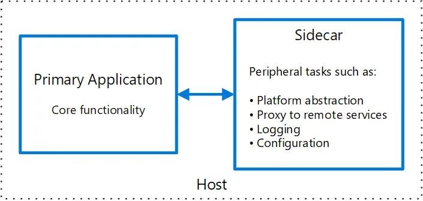
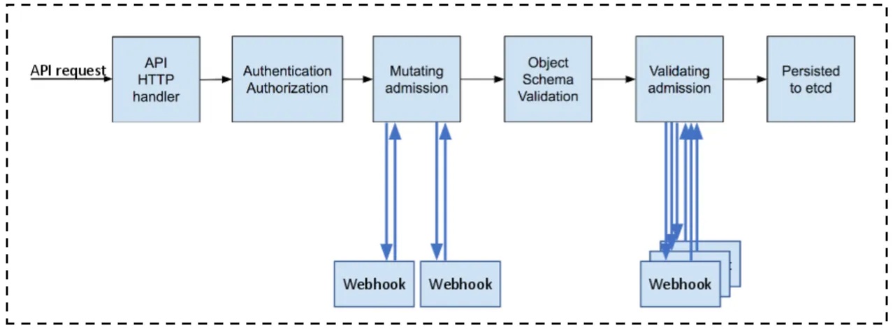

Kubernetes Sidecar Container Injection
This article is about building a Kubernetes controller to mutate pods automatically based on specific annotations or labels and inject one or more sidecar containers into them.
What are Sidecar Containers?
Sidecar containers are the containers that need to be run along with the primary container — the application container — and share the same resources with it, like the network and the storage interfaces, to enhance and extend the functionality of the main container without modifying its core set of tasks.

Kubernetes Admission Controller
Starting in Kubernetes v1.7, alpha support for external admission controllers is introduced; It provides two options for adding custom business logic to the API server for modifying objects as they are created and validating policy.
First, let’s have a look at the admission controller definition in the official docs:
An admission controller is a piece of code that intercepts requests to the Kubernetes API server before the persistence of the object but after the request is authenticated and authorised.
MutatingAdmissionWebhook and ValidatingAdmissionWebhook are special controllers that execute the mutating and validating logic by calling a webhook API.

There are tons of use cases where both admission webhook/s can be helpful.
- Implementing an image scanning component to detect vulnerabilities and misconfigurations in deployments.
- Enforcing an annotation or a label on a resource to be admitted.
- Injecting a sidecar proxy into pods that mediates inbound and outbound communication to it, the same as Istio does.
- And many, many others…
This article is focused on the MutatingAdmissionWebhook to build the sidecar injection controller, and for the sake of simplicity, I will use a busybox-curl as the sidecar container.
Prerequisites
First, verify that admissionregistration.k8s.io/v1 API is enabled on your Kubernetes cluster using this command:
kubectl api-versions | grep admissionregistration.k8s.io/v1
The output should be:
admissionregistration.k8s.io/v1
Then, verify that MutatingAdmissionWebhook is enabled by checking the --enable-admission-plugins flag using this command:
kube-apiserver -h | grep enable-admission-plugins
The output should be:
# Output is snipped, but you should find the MutatingAdmissionWebhook on the list there
CertificateApproval, CertificateSigning, ..., MutatingAdmissionWebhook, ...
Implementation
The following code snippets have been edited to fit the article format better. The complete code is available on the GitHub repo.
We need to run an HTTP API server to handle webhook API requests from the Kubernetes API server and mutate the pod containers accordingly.
Let’s first understand the request and response structure that Kubernetes uses for its admission webhook API requests.
Webhook Request
Webhooks are sent as POST requests with an AdmissionReview object serialised to JSON as the body.
In the AdmissionReview object, the request key with the type AdmissionRequest contains all details for the admission request.
An example of an AdmissionReview request body containing the AdmissionRequest object - snipped JSON:
{
"apiVersion": "admission.k8s.io/v1",
"kind": "AdmissionReview",
"request": {
"uid": "075a1336-0165-41e0-b0ac-8705883f1c41",
"dryRun": false,
"namespace": "default",
"...": "..."
"object": {
"apiVersion": "v1",
"kind": "Pod",
"...": "..."
}
}
}
Webhook Response
Webhook API should respond with the proper HTTP status code — 2xx in case of success or non-2xx in case of failure — and a body containing an AdmissionReview object containing the mutation changes as a base64-encoded array of JSON patch operations.
In the AdmissionReview object, the response key with the type AdmissionResponse should contain all details for the admission response.
An example of an AdmissionReview response body containing the AdmissionResponse object - snipped JSON:
{
"apiVersion": "admission.k8s.io/v1",
"kind": "AdmissionReview",
"response": {
"uid": "075a1336-0165-41e0-b0ac-8705883f1c41",
"allowed": true,
"patch": "W3sib3AiOiJhZGQiLCJwYXRoIjoiL3NwZWMvY29udG...",
"patchType": "JSONPatch"
}
}
You can check the JSON patch documentation for more details about how it can be used to describe changes to JSON objects.
Let’s implement the sidecar container injection logic…
Mutation Function
It is a simple function that does the following:
- Adds a busybox-curl container to the Pod’s containers array
- Generates the JSON patch change operations array using the fast-json-patch NPM package.
- Stringify the resulting JSON patch array and encode it to base64 string.
An example of the injection mutation function - snipped code:
import * as jsonpatch from 'fast-json-patch';
const mutate = (admissionReviewRequest: V1AdmissionRequest<V1Pod>): V1AdmissionResponse => {
const admissionReviewResponse: V1AdmissionResponse = {
allowed: true,
uid: admissionReviewRequest.uid,
};
// get the pod object and clone it
const originalPod = admissionReviewRequest.object as V1Pod;
const mutatedPod = JSON.parse(JSON.stringify(originalPod)) as V1Pod;
// update the mutated pod spec with the new containers array
const mutatedPodContainers = injectContainer(originalPod.spec?.containers);
mutatedPod.spec = { ...mutatedPod.spec, containers: mutatedPodContainers };
// generate json patch string
const patchArray = jsonpatch.compare(originalPod, mutatedPod);
const patchArrayJsonStr = JSON.stringify(patchArray);
admissionReviewResponse.patchType = "JSONPatch";
admissionReviewResponse.patch = Buffer.from(patchArrayJsonStr).toString('base64');
return admissionReviewResponse;
}
const injectContainer = (containers: V1Container[] = []): V1Container[] => {
const sidecarContainer: V1Container = {
name: 'curl',
image: 'yauritux/busybox-curl:latest'
};
return [...containers, sidecarContainer];
};
Okay, but how can we deploy it?
Deployment
Our admission webhook is an HTTP server that runs in the cluster, so it is a regular Kubernetes Deployment.
An example of Kubernetes Deployment that runs the admission webhook server - snipped YAML:
apiVersion: apps/v1
kind: Deployment
metadata:
name: kubernetes-sidecar-injector
labels:
app.kubernetes.io/instance: kubernetes-sidecar-injector
spec:
selector:
matchLabels:
app.kubernetes.io/instance: kubernetes-sidecar-injector
template:
metadata:
labels:
app.kubernetes.io/instance: kubernetes-sidecar-injector
spec:
containers:
- name: kubernetes-sidecar-injector
image: "mohllal/kubernetes-sidecar-injector:latest"
env:
- name: TLS_CERT_FILE
value: "/var/run/secrets/certs/tls-cert-file"
- name: TLS_PRIVATE_KEY_FILE
value: "/var/run/secrets/certs/tls-private-key-file"
volumeMounts:
- name: admission-controller-cert
mountPath: "/var/run/secrets/certs"
readOnly: true
volumes:
- name: admission-controller-cert
secret:
secretName: kubernetes-sidecar-injector
And to make the Deployment’s pods accessible by the Kubernetes API server, we need a Kubernetes Service.
An example of Kubernetes Service for the admission webhook server - snipped YAML:
apiVersion: v1
kind: Service
metadata:
name: kubernetes-sidecar-injector
labels:
app.kubernetes.io/instance: kubernetes-sidecar-injector
spec:
type: ClusterIP
ports:
- port: 443
targetPort: 8443
protocol: TCP
name: https
selector:
app.kubernetes.io/instance: kubernetes-sidecar-injector
Admission webhooks are served via HTTPS, so we need proper certificates for the server. These certificates can be self-signed (signed by a self-signed CA), but we need Kubernetes to instruct the respective CA certificate when talking to the webhook server.
In addition, the common name (CN) of the certificate must match the Kubernetes Service name used by the Kubernetes API server, which for internal services is <service-name>.<namespace>.svc.
Here is an example of a Kubernetes Secret that holds the TLS certificate cert and private key.
apiVersion: v1
kind: Secret
metadata:
name: kubernetes-sidecar-injector
type: Opaque
data:
tls-cert-file: LS0tLS1CRUdJTiBDRVJUSUZJQ0FURS0tLS0tCk1JS...
tls-private-key-file: LS0tLS1CRUdJTiBSU0EgUFJJVkFURSBLRVktLS0t...
More about generating the certificate comes later in the demo section below. Still, if you don’t want to use Helm, you can generate a self-signed certificate using the openssl CLI tool and put it manually inside a Kubernetes Secret.
Finally, the Kubernetes MutatingWebhookConfiguration describes the admission webhook configuration and which objects are subject to the admission webhook server.
An example of Kubernetes MutatingWebhookConfiguration for the admission controller webhook server - snipped YAML:
apiVersion: admissionregistration.k8s.io/v1
kind: MutatingWebhookConfiguration
metadata:
name: kubernetes-sidecar-injector
webhooks:
- name: kubernetes-sidecar-injector.default.svc
admissionReviewVersions:
- v1
sideEffects: "NoneOnDryRun"
reinvocationPolicy: "Never"
timeoutSeconds: 10
objectSelector:
matchExpressions:
- key: sidecar.me/inject
operator: In
values:
- "True"
- "true"
rules:
- apiGroups:
- ""
apiVersions:
- v1
operations:
- CREATE
resources:
- pods
scope: '*'
clientConfig:
service:
namespace: default
name: kubernetes-sidecar-injector
path: "/mutation/pod"
caBundle: LS0tLS1CRUdJTiBDRVJUSUZJQ0FURS0t...
In the objectSelector and rules sections, we enable the mutation webhook only on pod objects with the sidecar.me/inject: True in their labels when a Pod is being created.
In the clientConfig section, we define the webhook server hostname, our kubernetes-sidecar-injector service running in the default namespace, and configure the webhook API request to be landed on the /mutation/pod path.
The caBundle refers to the PEM-encoded CA bundle generated earlier that the Kubernetes API Server as a client can use to validate the server certificate.
You can check the official documentation for more details about the different configurations that can be used for the admission webhook.
Now, it is demo time…
Demo
To make things easier, I used Helm charts to package two applications:
- The kubernetes-sidecar-injector chart packages the API server’s deployment, service, TLS certificate, etc…
- The httpbin chart packages an echo HTTP server to test the sidecar injection.
I used both genSignedCert and genCA helm functions to generate an x509 certificate with both Subject Common Name (CN) and SubjectAltName (SAN) set to the service fully qualified hostname.
Let’s install both charts…
# 1. install the kubernetes-sidecar-injector chart
helm install kubernetes-sidecar-injector charts/kubernetes-sidecar-injector/ \
--values charts/kubernetes-sidecar-injector/values.yaml \
--namespace default
# 2. install the httpbin chart
helm install httpbin charts/httpbin/ \
--values charts/httpbin/values.yaml \
--namespace default
Listing all containers in the httpbin Deployment’s Pod, you can notice that a new container is running in it named curl.
# 1. export the pod name
export POD_NAME=$(kubectl get pods \
--namespace default \
-l "app.kubernetes.io/name=httpbin,app.kubernetes.io/instance=httpbin" \
-o jsonpath="{.items[0].metadata.name}")
# 2. list all containers running inside the pod
kubectl get pods $POD_NAME \
--namespace default \
-o jsonpath='{.spec.containers[*].name}'
Accessing the httpbin HTTP server from inside the curl container.
# 1. export the pod name
export POD_NAME=$(kubectl get pods \
--namespace default \
-l "app.kubernetes.io/name=httpbin,app.kubernetes.io/instance=httpbin" \
-o jsonpath="{.items[0].metadata.name}")
# 2. curl from the sidecar container
kubectl exec $POD_NAME \
--namespace default \
-c curl \
-- curl http://localhost/anything
Woohoo! the pod has been injected with an extra sidecar container that shares the same network interface with the primary container.
Conclusion
Admission controllers are essential when it comes to extending the Kubernetes functionality with domain logic since they can mutate or reject requests to the Kubernetes API server before the object is persisted.
Defining a custom admission system through HTTP-enabled webhooks is easy to implement in any programming language and opens the door to many possible use cases.